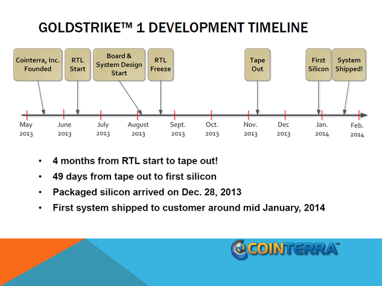
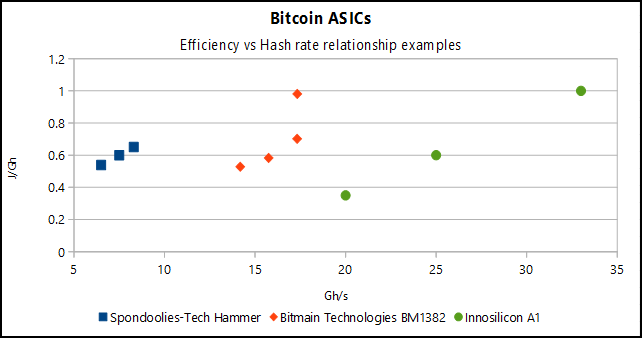

An application-specific integrated circuit (abbreviated as ASIC) is an integrated circuit (IC) customized for a particular use, rather than intended for general-purpose use. In Bitcoin mining hardware, ASICs were the next step of development after CPUs, GPUs and FPGAs. Capable of easily outperforming the aforementioned platforms for Bitcoin mining in both speed and efficiency, all Bitcoin mining hardware that is practical in use will make use of one or more Bitcoin (SHA256d) ASICs.
Note that Bitcoin ASIC chips generally can only be used for Bitcoin mining. While there are rare exceptions - for example chips that mine both Bitcoin and Litecoin - this is often because the chip package effectively has two ASICs: one for Bitcoin and one for Litecoin.
The ASIC chip of choice determines, in large part, the cost and efficiency of a given miner, as ASIC development and manufacture are very expensive processes, and the ASIC chips themselves are often the components that require the most power on a Bitcoin miner.
While there are many Bitcoin mining hardware manufacturers, some of these should be seen as systems integrators - using the ASIC chips manufactured by other parties, and combining them with other electronic components on a board to form the Bitcoin mining hardware.
Bitcoin ASIC development pace
 The pace at which Bitcoin ASICs have been developed, for a previously non-existent market, has seen some academic interest. One paper titled "Bitcoin and The Age of Bespoke Silicon" notes:
{kind=link}
We examined the Bitcoin hardware movement, which led to the development of customized silicon ASICs without the support of any major company. The users self-organized and self-financed the hardware and software development, bore the risks and fiduciary issues, evaluated business plans, and braved the task of developing expensive chips on extremely low budgets. This is unheard of in modern times, where last-generation chip efforts are said to cost $100 million or more -- Michael Bedford Taylor, University of California http://cseweb.ucsd.edu/~mbtaylor/papers/bitcoin_taylor_cases_2013.pdf
The Bitcoin and Cryptocurrency Technologies online course by Princeton University notes:
The amazing thing about Bitcoin ASICs is that, as hard as they were to design, analysts who have looked at this have said this may be the fastest turnaround time - essentially in the history of integrated circuits - for specifying a problem, which is mining Bitcoins, and turning it around to have a working chip in people's hands. -- Joseph Bonneau, Postdoctoral research associate, Princeton University https://www.youtube.com/watch?v=jXerV3f5jN8#t=26m40s
A timeline overview for CoinTerra's Goldstrike 1 chip also shows this as 8 months between founding the company and shipping a product.
Bitcoin ASIC specifications
 A Bitcoin ASIC's specification could be seen as having a certain ?hash rate (e.g. Gh/s) at a certain efficiency (e.g. J/Gh). While cost is another factor, this is often a relatively fixed factor as the minimum cost of a chip will be determined by the fabrication process, while the maximum cost will be determined by market forces, which are outside of post-fabrication technological control.
{kind=link}
When reading the specifications for ASICs on this page is that they should be interpreted as being indicative, rather than authoritative. Many of the figures will have come from the manufacturers, who will present their technology in the best light - be that high hash rates that in practice may not be very efficient and require additional cooling, or very high efficiency at a cost of hash rate and risking being slow in the race against difficulty adjustments.
Complicating the matter further is that Bitcoin ASICs can often be made to cater to both ends of the spectrum by varying the clock frequency and/or the power provided to the chip (often via a regulated voltage supply). As such, chips can not be directly compared.
Comparing Bitcoin ASICs
Two proposals have been made in the past for attempts at comparing ASICs - Gh/mm² and η-factor.
Gh/mm² is a simple measure of the number of Gigahashes per second of the chip, divided by its die area (area of the the actual silicon). This measure however does not take into account the node size which affects how many logical cells can fit in a given area.
As a result, η-factor was suggested at the BitcoinTalk Forums which attempts to take the node size into account, by multiplying the Gh/mm² value by the half the node size, three times.
Although the merit of these approaches can be debated, ultimately these figures are not as important as the ones that detail what is required to make an ASIC work. If an ASIC requires highly stable power supply, then the power supply circuitry on a board may be more expensive than for another ASIC. If the ASIC has a complex communications protocol, additional relatively expensive components may be required. If an ASIC's die is large, fewer (rectangular slices) can be obtained from a (circular) wafer), defects affect its design dispropotionately, and cooling solutions are generally more complex compared to smaller die chips which in turn have other overhead. Chips with a BGA design are less simple to integrate than a QFN, requiring more expensive (inspection and testing) equipment.
Nevertheless, for historic purposes they are included in listings here where sufficient information is available.
Number of cores
One other oft-mentioned number statistic for an ASIC chip is the number of cores or hashing engines that are on the chip. While this number is directly related to performance, it is not necessarily a comparitive relation.
Bitmain Technologies' BM1382 calculates 63 hashes per clock cycle (Hz), while their more efficient BM1384 calculates 55 hashes per clock cycle. Similarly, while these hashes per clock cycle are spot-on for the claims regarding the number of cores, BitFury's BF756C55 is claimed to have 756 cores, but yields around 11.6 hashes per clock cycle. This is because the reference to cores sometimes mean different things, and certain designs result in less straightforward calculation (5.1)
Nevertheless, when a designer makes claims regarding hash rates at certain clock frequencies, one can determine if A. there is a straightforward calculation and B. if the designer is being imprecise (rounding values) or even intentionally dishonest, as the ratio between clock cycles and hash rate should remain the same.
External links
- video about the technological aspects of custom processor design
- article about the economical aspects of custom processor design
References
5.1: https://bitcointalk.org/index.php?topic=228677.msg2408299#msg2408299